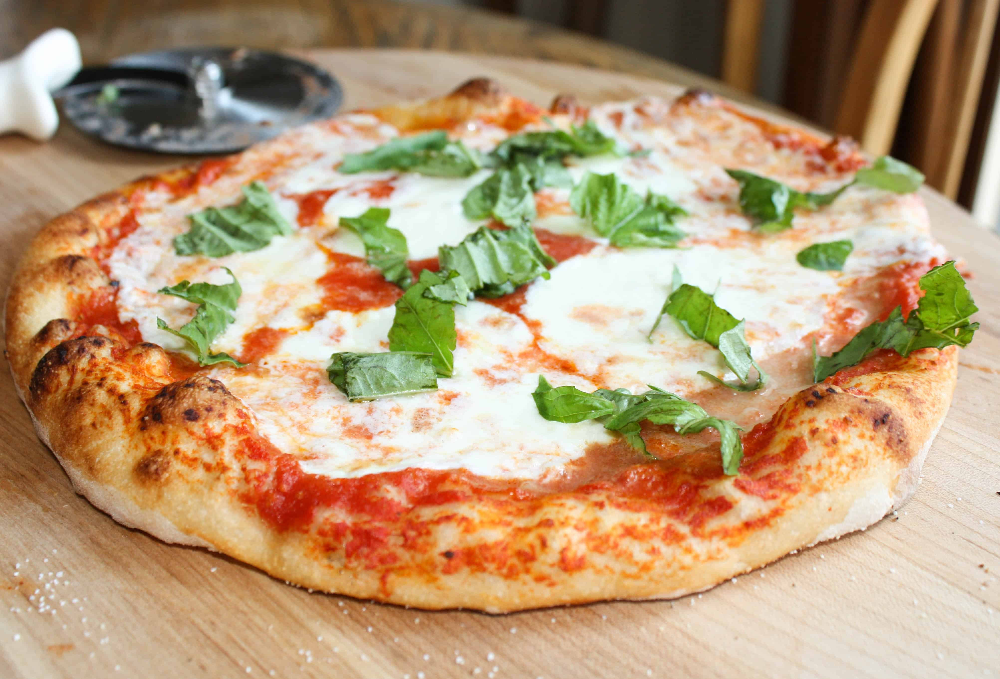

Neapolitan Pizza

Pizza - it's what makes the world go around
Pizza has a special place in all of our hearts. It's what brings families together. It goes with movies, moving into a new apartment, or spending time with friends.
Follow the easy steps below to make your own pizza, and get to having fun with your friends and family.
Recipe found at here.
- 1 1/2 cups plus 2 tablespoons warm water (100 degrees F to 110 degrees F)
- 3/4 teaspoon active dry yeast
- 4 cups unbleached all-purpose flour, plus more for dusting
- 2 1/2 teaspoons kosher salt
- Extra-virgin olive oil, for brushing Cornmeal, for dusting
- 1 28-ounce can whole peeled tomatoes (preferably San Marzano) Kosher salt
- 8 ounces fresh mozzarella cheese, sliced
- Extra-virgin olive oil, for drizzling
- Torn fresh basil, for topping